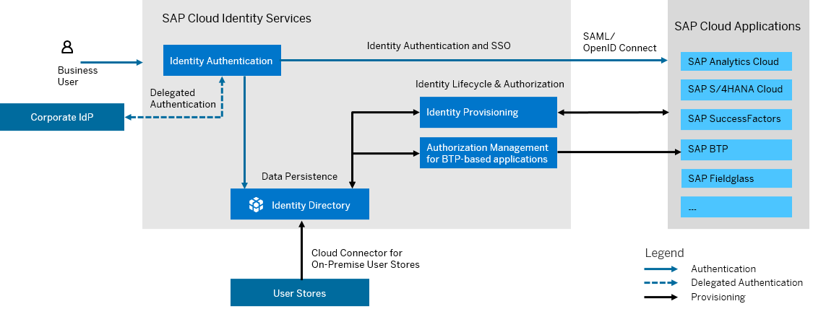
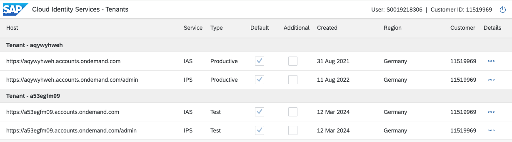
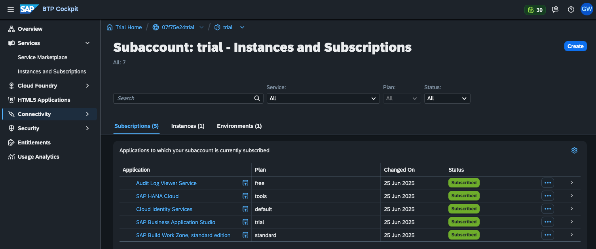
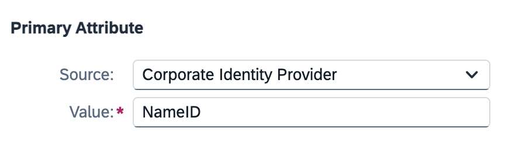
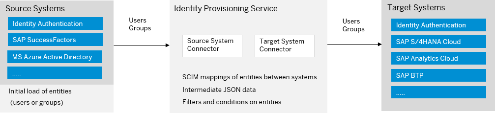
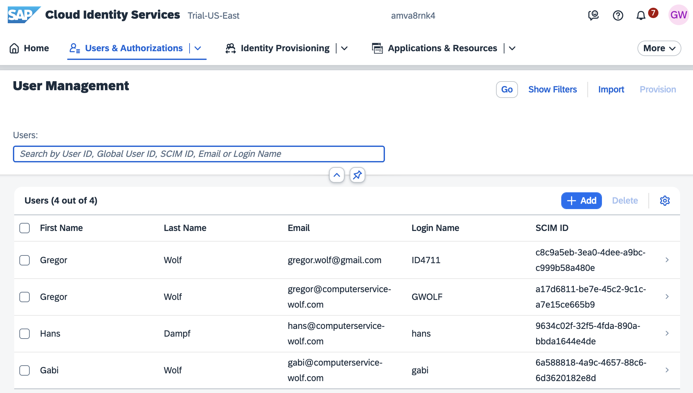
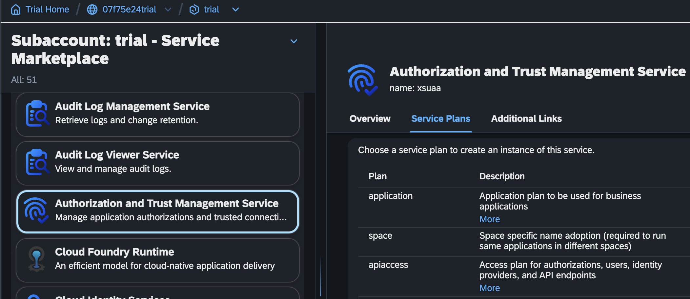

SAP Cloud Identity Services
Gregor Wolf
SAP Cloud Identity Services
- Überblick
- Einrichtung und SAP BTP Verbindung
- Anbindung an Entra ID
- Benutzer Authentifizierung
- Benutzer- und Gruppen-Provisionierung
Architektur

Regionale Verfügbarkeit

Welche SAP Cloud Identity Services Tenants existieren?

Empfehlungen
- Möglichst wenige CIS Tenants
- Nur einen produktiven CIS Tenant
- Mit SuccessFactors: Eigene CIS Tenants für Dev, QA, Preprod sind OK
- CIS Test nur an Sandbox
- BTP Dev Subaccount ist für Entwickler produktiv
Einrichtung
mit Terraform
Entitlement
resource "btp_subaccount_entitlement" "identity_service" {
subaccount_id = btp_subaccount.trial.id
service_name = "sap-identity-services-onboarding"
plan_name = "default"
}
Subscription
resource "btp_subaccount_subscription" "identity_instance" {
subaccount_id = btp_subaccount.trial.id
app_name = "sap-identity-services-onboarding"
plan_name = "default"
parameters = jsonencode({
cloud_service = "TEST"
})
depends_on = [btp_subaccount_entitlement.identity_service]
}
Trust zum BTP Subaccount herstellen
resource "btp_subaccount_trust_configuration" "customized" {
subaccount_id = btp_subaccount.trial.id
identity_provider = element(split("/",
btp_subaccount_subscription.identity_instance
.subscription_url), 2)
}
Terraform Konfiguration anwenden
terraform login
terraform init
terraform plan
terraform apply
Ergebnis

Anbindung an Entra ID
Konfigurationsschritte (1/5)
Configure SAP Cloud Identity Services for Single sign-on with Microsoft Entra ID
- Download SAML Metadaten aus IAS -> Applications & Resources -> Single Sign On -> SAML 2.0 Configuration
- In Entra ID -> Enterprise Applications -> Neue Anwendung -> SAP -> SAP Cloud Identity Services
- SSO -> SAML -> Upload IAS Metadata
Konfigurationsschritte (2/5)
- Attribute für SAP anpassen

Konfigurationsschritte (3/5)
- Download Federation Metadata XML aus IAS Enterprise Application
- Anlage Corporate Identity Provider in SAP Cloud Identity Services -> Identity Providers
- Import Federation Metadata XML
- Aktivierung Identity Federation
Konfigurationsschritte (4/5)
- Subject Name Identifier anpassen

Konfigurationsschritte (5/5)
- Attribute anpassen
Benutzer Authentifizierung
- Zwischen BTP und IAS zukünftig nur noch OpenID Connect
- Neue Instanzen von SAP Build Work Zone authentifizieren direkt am IAS (XSUAA wird nicht mehr verwendet)
- Zu Entra ID ist SAML und OpenID Connect möglich
Tipps
Benutzer- und Gruppen-Provisionierung

Quellsystem
Zielsystem
Resultat

Quellsystem
Voraussetzung für das Zielsystem

Zielsystem

Resultat
Kontakt
Gregor Wolf,
Computerservice Wolf
gregor@computerservice-wolf.com
| Präsentation | Visitenkarte | ||
|---|---|---|---|

|